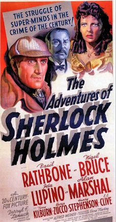

The Adventures of Sherlock Holmes
Starring: Basil Rathbone, Nigel Bruce, Ida Lupino
Director: Alfred L. Werker
Writer: Edwin Blum, William Gillette
Producer: Darryl F. Zanuck
The Adventures of Sherlock Holmes (released theatrically as Sherlock Holmes in the United Kingdom) is a 1939 American mystery adventure film based on Sir Arthur Conan Doyle's Sherlock Holmes detective stories. Although claiming to be an adaptation of the 1899 play Sherlock Holmes by William Gillette, the film bears little resemblance to the play.
Trivia
- Based on Sherlock Holmes (four-act play written by William Gillette and Sir Arthur Conan Doyle).
- The film was supposedly based on the stage play by William Gillette, though little of the play's original plot remains aside from the Holmes/Moriarty conflict.
- The play featured a very young Charlie Chaplin in one of his very first acting roles during its first London production, playing the character of Billy, who, in this movie, is played by Terry Kilburn.
Previous Showings
5 Runs • 3 Festivals
Original Billings: 1 run (September 29, 1939)
Original Run: September 29, 1939 (Friday - Saturday)
All runs on record (5):
- September 29, 1939 (Friday - Saturday)Basil Rathbone, Nigel Bruce
- December 19, 1989w/ The Hound of the Baskervilles
- August 25 - 27, 2009Summer 2009w/ The Hound of the Baskervilles
- August 7 - 8, 2014Summer 2014w/ Charlie Chan at the Opera
- December 10 - 11, 201980 Years Ago in This Theatre: The Films of 1939w/ Jamaica Inn